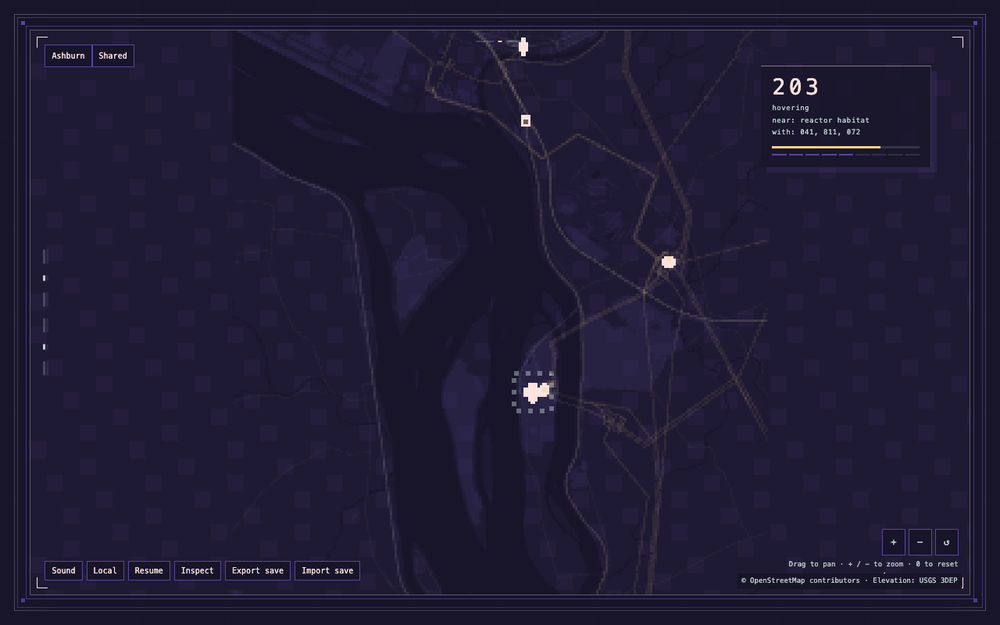
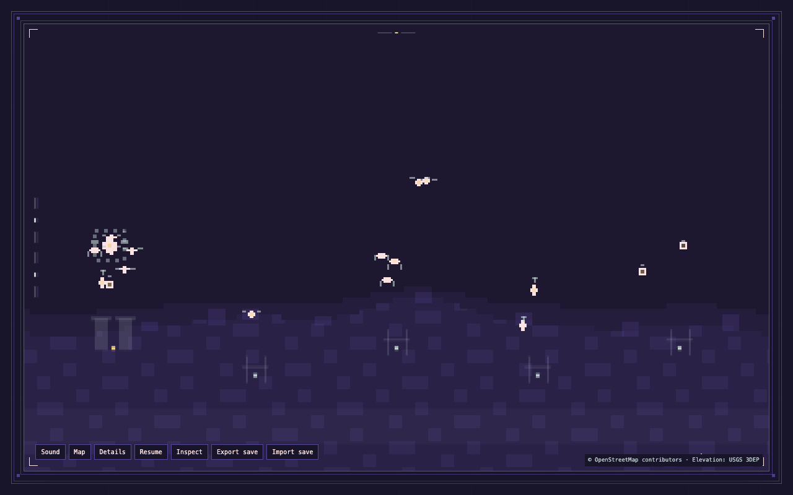
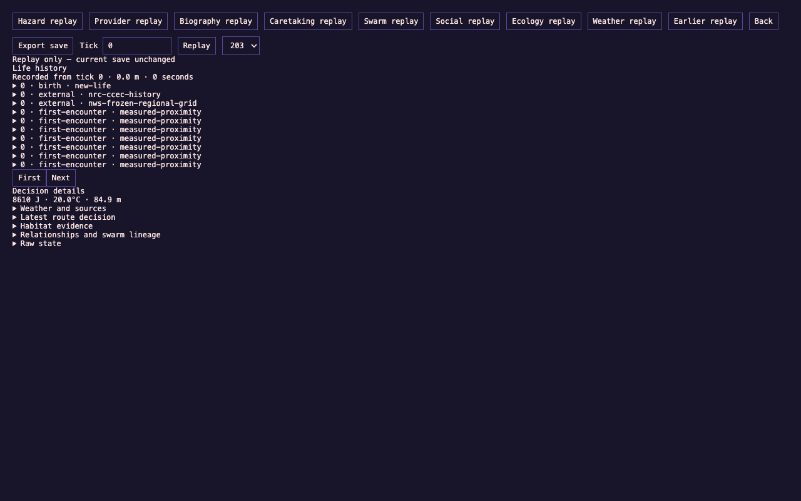

Simulation / interactive world
Drone Fields
A browser ecology of autonomous machines. Each drone has routes, energy, relationships, and a recorded life. Move between a geographic map and a close local view, then inspect the history behind what happened.
My contribution
I developed the concept, visual direction, interaction, and simulation design, and directed implementation and testing using AI coding tools. The work includes the browser interface, geographic data integration, save validation, life history, and replay. Geographic and environmental datasets are credited separately.
Three decisions that shape the system
- Keep time independent of rendering. Fixed simulation steps and recorded inputs let a saved life be replayed. The map and local view render the same state, so changing the view preserves the selected drone and simulation time.
- Give source data a recorded boundary. Captured geography and environmental records carry provenance. The simulation can use those frozen inputs without depending on live provider availability. Its behavioral rules are fictional and explicit.
- Let people inspect without rewriting a life. The history view reads recorded events and replays earlier ticks. Import validates a save before replacing current state; an invalid file leaves the existing archive intact.


Verification
On September 15, 2026, the production build and TypeScript check passed. Current-runtime checks reproduced the same state and history from the same inputs in both regions, verified exact replay, and round-tripped saves. Browser checks covered map/local continuity, keyboard selection, reload, valid and invalid imports, replay preservation, mobile controls, and reduced motion, with no application exceptions.

Current limits and next work
This page presents a recorded local prototype. The existing Three Mile Island and Ashburn regions are provisional studies; final location design remains open. Data is frozen, not live monitoring. The optional shared-world and local test-chain edition is outside this demonstration.
A legacy acceptance check exposed order-dependent attribution of external events when the internal drone array is reversed. That limitation is tracked separately; the tested normal save/replay path remains reproducible. A runtime change needs to preserve existing life archives.
The next product step is a deliberate location and pacing pass, followed by evaluation of a distributable desktop edition.